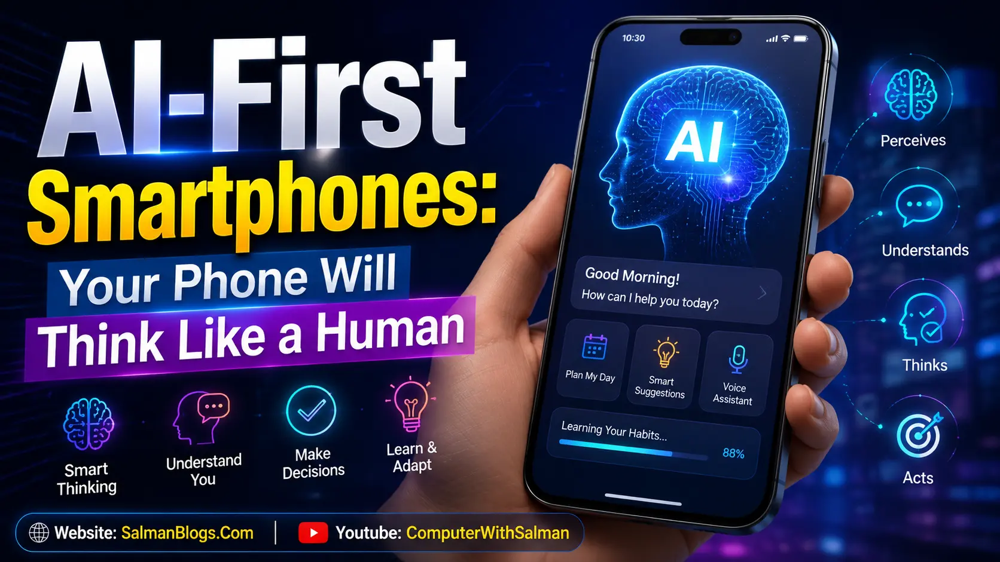
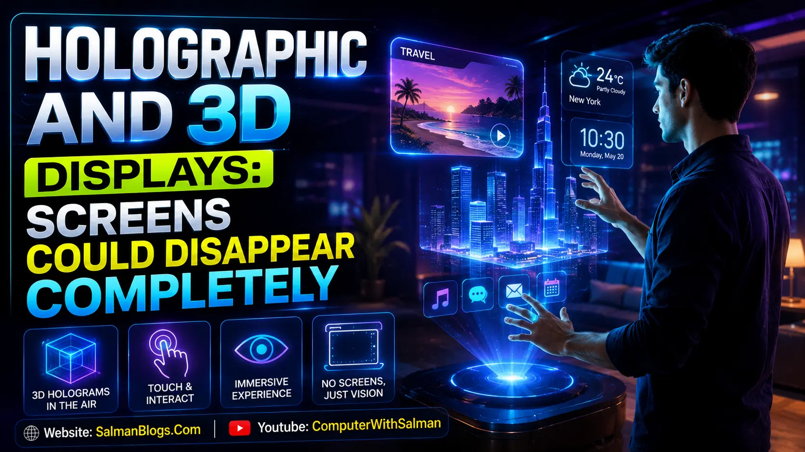
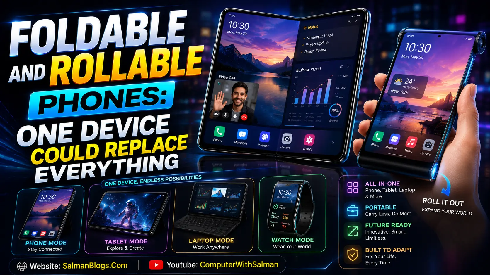
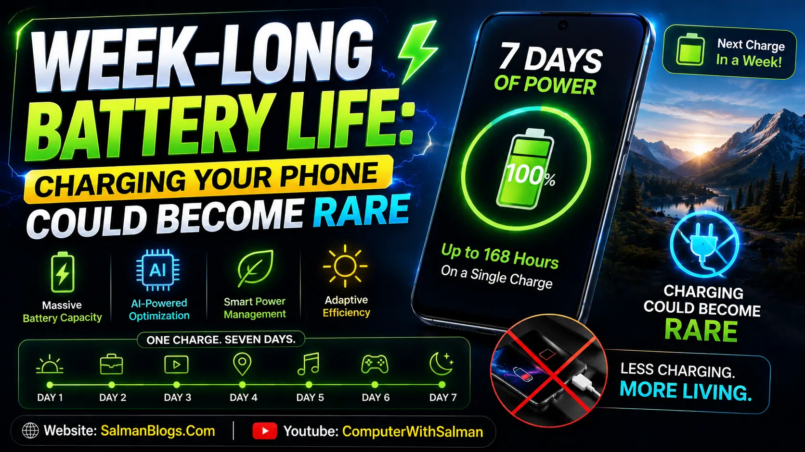
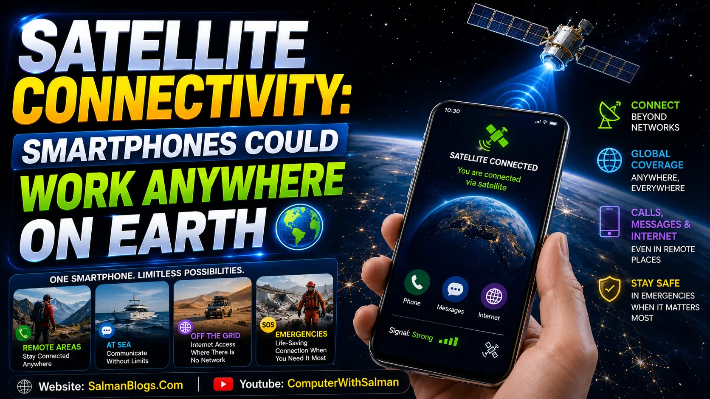
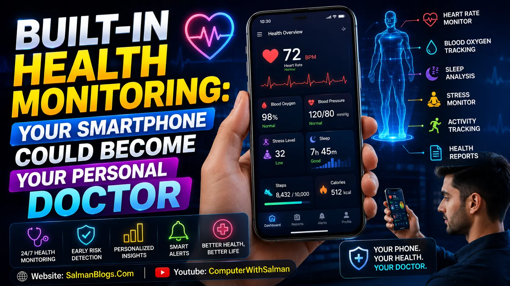
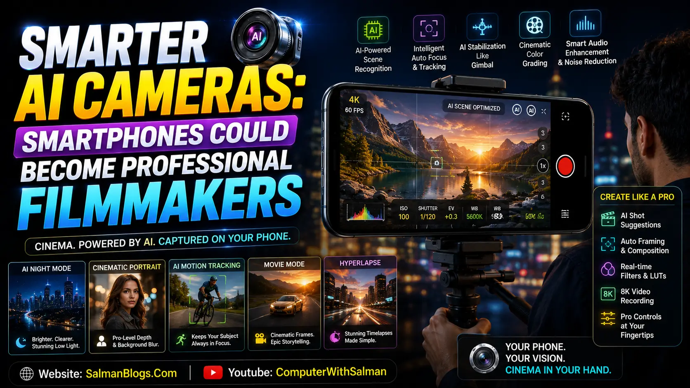
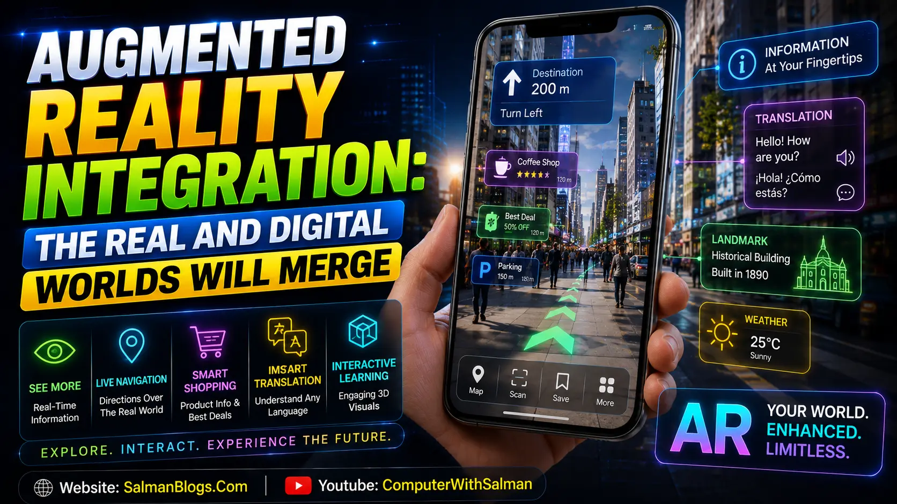
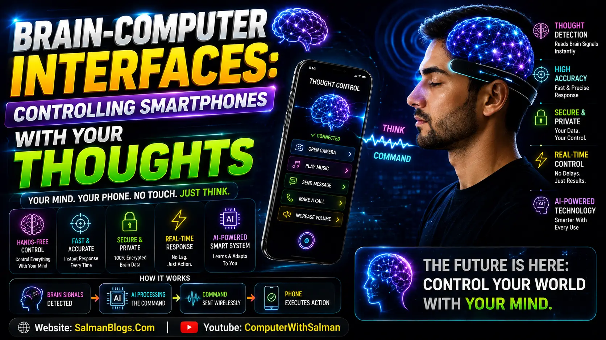

Introduction
Smartphones are evolving faster than ever. By 2030, they are expected to become more intelligent, more personalized, and deeply connected with our daily lives.
Future smartphones may work like smart digital companions instead of simple communication devices. They could understand emotions, predict user needs, assist with health monitoring, and interact with augmented reality environments.
Below are the latest and most realistic smartphone innovations experts expect by 2030.
1. AI-First Smartphones: Your Phone Will Think Like a Human
Imagine waking up in the morning and your smartphone already knows what kind of day you are going to have. It checks your calendar, traffic, weather, sleep quality, battery level, and even your mood, all before you touch the screen.

This is the future experts believe we could see by 2030. Smartphones will no longer be simple devices for calls and social media. They may become intelligent digital companions that understand your habits, emotions, routines, and personal preferences almost like a real human assistant.
Future AI-powered smartphones could completely change how we live, work, study, shop, travel, and communicate. Instead of opening apps manually, users may simply speak naturally to their phones and receive instant, personalized help.
What Future AI Smartphones Could Do
- Automatically organize your daily schedule
- Remind you about meetings before you forget
- Translate conversations instantly in real time
- Create photos, videos, and presentations using AI
- Detect spam calls and online scams automatically
- Suggest healthier lifestyle habits based on routines
- Summarize long emails and messages in seconds
- Generate social media captions and content instantly
- Predict what you need before you even ask
- Optimize battery life intelligently throughout the day
- Help students learn with personalized explanations
- Provide emergency assistance during dangerous situations
- Improve smartphone security using AI behavior detection
- Adjust settings automatically based on your environment
- Act like a personal productivity coach every day
Imagine This Real-Life Scenario
You wake up late for work. Your AI smartphone notices the situation immediately. It automatically changes your alarm timing, checks traffic conditions, suggests the fastest route, prepares your morning reminders, and even sends a message to your office saying you may arrive a few minutes late.
While driving, your phone reads important messages aloud, blocks spam notifications, and recommends a coffee stop because it noticed you slept poorly last night.
This level of intelligent assistance may sound futuristic today, but AI is advancing faster than most people realize.
AI Will Change Photography Forever
Future smartphone cameras may not just capture photos, they could understand what you are trying to create.
AI could automatically:
- Improve lighting and colors instantly
- Remove unwanted background objects
- Create cinematic video effects automatically
- Generate professional-quality portraits
- Enhance old or blurry photos using AI restoration
Even beginners may be able to create content that looks professionally edited within seconds.
Smartphones May Understand Human Emotions
By 2030, some AI systems may even recognize stress, sadness, excitement, or frustration through voice patterns, typing behavior, and facial expressions.
Your smartphone could suggest relaxing music during stressful moments, remind you to take breaks while working, or encourage healthier habits when it detects exhaustion.
In the future, smartphones may not just respond to commands. They may genuinely understand human behavior.
The Biggest Advantage: On-Device AI
One major improvement expected by 2030 is on-device AI. This means many AI features will run directly on the smartphone instead of relying completely on cloud servers.
Benefits include:
- Faster performance
- Better privacy protection
- Reduced internet dependency
- More secure personal data
- Smarter offline functionality
But There’s Also a Big Concern...
As smartphones become smarter, they will collect more personal information than ever before. Privacy and security will become one of the biggest challenges of future technology.
Experts believe companies will need stronger encryption systems, customizable privacy controls, and stricter AI regulations to protect user data.
Final Thoughts
AI-first smartphones could become one of the greatest technological changes of the next decade. They may save time, improve productivity, simplify daily life, and completely transform the way humans interact with technology.
By 2030, your smartphone may not just be a device in your pocket. It could become your personal assistant, creative partner, health companion, and intelligent digital helper all in one.
2. Holographic and 3D Displays: Screens Could Disappear Completely
Imagine watching a movie floating in the air right in front of you without wearing special glasses or using a giant TV screen. By 2030, this futuristic idea could become reality through holographic smartphone technology.

Future smartphones may no longer depend completely on traditional flat displays. Instead, they could project realistic 3D holograms directly into the air, allowing users to interact with digital content in entirely new ways.
Experts believe holographic technology could completely transform gaming, education, entertainment, business meetings, shopping, and even social media experiences.
What Holographic Smartphones Could Do
- Project realistic 3D video calls into your room
- Create immersive gaming experiences without VR headsets
- Display movies and videos in holographic format
- Show interactive 3D maps and navigation systems
- Allow virtual business meetings with hologram participants
- Display educational 3D models for students
- Create futuristic social media experiences
- Project virtual keyboards in the air
- Enable advanced augmented reality interactions
- Improve online shopping with 3D product previews
- Help designers and engineers visualize projects instantly
- Create holographic fitness trainers at home
- Provide more immersive sports and live event streaming
- Allow realistic virtual tourism experiences
- Turn smartphones into portable mini projectors
Imagine This Real-Life Scenario
You receive a video call from a friend living in another country. Instead of seeing them on a small screen, a realistic 3D hologram appears in your room. You can walk around, view them from different angles, and interact naturally almost as if they were physically present beside you.
Later, while studying, your smartphone projects a rotating 3D model of the solar system above your desk, making learning far more interactive and engaging than reading from a textbook.
This level of immersion could completely redefine digital communication and entertainment.
Gaming and Entertainment Will Feel Revolutionary
Holographic displays may become one of the biggest revolutions in mobile gaming history.
Instead of staring at a flat display, players could see game characters, battle arenas, and virtual worlds projected directly into real-world environments.
Future entertainment experiences may include:
- 360-degree holographic games
- Interactive movie experiences
- Live holographic concerts at home
- Virtual sports viewing in 3D
- Realistic AR social experiences
How This Technology May Work
Researchers are currently developing advanced display systems using:
- Micro-LED technology
- Light-field displays
- Laser projection systems
- AI-powered image rendering
- Flexible transparent display materials
These technologies could allow smartphones to create realistic depth, movement, and lighting effects without needing bulky hardware.
Education Could Change Forever
Holographic smartphones may make learning dramatically more interactive.
Students could explore:
- 3D anatomy models
- Historical recreations
- Interactive science experiments
- Virtual engineering designs
- Realistic space simulations
Instead of simply reading information, students may experience lessons in fully visual and interactive environments.
But There’s One Major Challenge...
Holographic technology may require powerful processors, advanced cooling systems, and high battery consumption. Early holographic smartphones could also be expensive and difficult to manufacture.
Companies will need major improvements in battery efficiency, display technology, and AI processing before holographic smartphones become mainstream worldwide.
Final Thoughts
Holographic and 3D display technology could completely change how humans interact with smartphones by 2030. Screens may evolve from flat displays into immersive digital environments that feel far more realistic and interactive.
From gaming and education to business meetings and entertainment, holographic smartphones may transform the digital world into something closer to science fiction than today’s technology.
3. Foldable and Rollable Phones: One Device Could Replace Everything
Smartphones are already changing rapidly, and foldable phones are only the beginning. By 2030, experts believe smartphones could become rollable, stretchable, bendable, and even wearable.
Future devices may completely transform the meaning of a smartphone. Instead of carrying separate gadgets like tablets, laptops, gaming devices, and smartwatches, users may only need one intelligent device that changes shape depending on the situation.
Imagine pulling a small phone from your pocket and expanding it into a large tablet-sized screen within seconds. Future smartphones could adapt to your needs instantly.

What Future Foldable Phones Could Offer
- Expandable tablet-sized displays
- Rollable screens that slide outward instantly
- Ultra-thin flexible display technology
- Wearable smartphone bracelet designs
- Multi-screen productivity modes
- Portable gaming and entertainment systems
- Improved durability and stronger hinge systems
- Self-healing display materials
- Lightweight futuristic designs
- Waterproof and dust-resistant flexible devices
- Phones that transform into mini laptops
- Bigger screens without increasing pocket size
- Improved multitasking experiences
- Better reading and movie experiences
- AI-optimized screen resizing for different tasks
Imagine This Real-Life Scenario
You are traveling with only a small foldable smartphone in your pocket. While working, you unfold the device into a large tablet to answer emails, edit documents, and attend virtual meetings.
Later, during your break, the same device transforms into a gaming screen with console-like visuals. At night, you roll the display outward for a cinematic movie experience.
Instead of carrying multiple gadgets everywhere, one flexible device could handle nearly every digital activity.
Wearable Smartphones Could Become Normal
Some future smartphones may become fully wearable. Companies are already experimenting with flexible displays that can wrap around the wrist like a bracelet.
By 2030, wearable smartphones could:
- Wrap around your wrist like a smart band
- Expand into full-sized displays when needed
- Work seamlessly with AR glasses
- Provide health tracking features
- Reduce the need to carry devices in pockets
These futuristic designs may completely change how people interact with technology every day.
Must to ReadThe Technology Behind Flexible Phones
Researchers are developing advanced materials and technologies that make flexible smartphones possible.
- Flexible OLED displays
- Ultra-thin bendable glass
- Self-healing screen coatings
- Advanced hinge mechanisms
- Stretchable battery technology
Future devices may become thinner, lighter, and more durable than today’s smartphones despite having flexible designs.
Gaming and Productivity Could Improve Dramatically
Foldable and rollable smartphones could create massive improvements in both productivity and entertainment.
Users may enjoy:
- Laptop-like multitasking on smartphones
- Large-screen gaming anywhere
- Better video editing experiences
- Enhanced reading and studying comfort
- Improved split-screen functionality
Future smartphones may finally combine the power of tablets, laptops, and gaming devices into one portable product.
But There’s Still a Big Problem...
Current foldable phones still face problems like screen creases, hinge damage, expensive repairs, and weaker durability compared to traditional smartphones.
By 2030, manufacturers will need stronger materials, better waterproofing, improved battery systems, and more affordable production methods before flexible phones become mainstream worldwide.
Final Thoughts
Foldable and rollable smartphones could become one of the biggest design revolutions in mobile technology history. Instead of adapting our lives to fit technology, future smartphones may physically adapt to our needs.
By 2030, carrying one flexible device that works as a phone, tablet, gaming console, and wearable gadget may become completely normal.
4. Week-Long Battery Life: Charging Your Phone Could Become Rare
One of the biggest frustrations smartphone users face today is battery life. No matter how powerful phones become, most people still need to charge their devices every single day.
But by 2030, this problem could finally disappear. Experts believe future battery technology may allow smartphones to last several days or even an entire week on a single charge.

Future smartphones may not only become more powerful, they could also become dramatically more energy efficient. Charging your phone every night may eventually feel as outdated as using wired internet connections today.
What Future Smartphone Batteries Could Offer
- Week-long battery life on a single charge
- Ultra-fast charging in under 10 minutes
- Graphene and silicon-carbon battery technology
- Lower overheating during gaming and charging
- Longer battery lifespan with less degradation
- Wireless charging almost everywhere
- AI-powered battery optimization
- Smaller batteries with higher energy capacity
- Eco-friendly and recyclable battery materials
- Safer batteries with lower fire risks
- Improved power efficiency for AI tasks
- Better performance in extreme temperatures
- Smart charging that protects battery health
- Portable solar and ambient charging support
- Reduced dependence on power banks
Imagine This Real-Life Scenario
You leave for a 5-day trip without carrying a charger. Your smartphone easily lasts throughout the entire journey while handling navigation, photography, gaming, social media, video calls, and streaming.
When the battery finally becomes low, you place the phone on a wireless charging table at a café for just a few minutes and instantly gain hours of battery life.
This future may sound impossible today, but major companies are already investing billions into next-generation battery research.
Graphene Batteries Could Change Everything
One of the most exciting technologies being developed is the graphene battery.
Compared to traditional lithium-ion batteries, graphene batteries may:
- Charge significantly faster
- Generate less heat
- Store more energy
- Last longer before degrading
- Improve smartphone safety
Graphene is an extremely thin and powerful material that many experts believe could revolutionize the entire electronics industry.
Wireless Charging Could Become Invisible
By 2030, wireless charging may become available almost everywhere.
Future charging systems could be built into:
- Office desks
- Cars
- Airports
- Coffee shops
- Restaurants
- Public transportation
- Hotel rooms
Some experts even believe smartphones may eventually charge automatically through surrounding radio waves or solar energy.
AI Will Make Batteries Smarter
Artificial intelligence may also play a major role in improving battery performance.
Future AI systems could:
- Automatically close power-hungry apps
- Adjust brightness intelligently
- Optimize charging speed safely
- Predict battery usage patterns
- Reduce unnecessary background activity
Instead of users constantly managing battery settings, smartphones may optimize power usage automatically in real time.
But There’s Still a Major Challenge...
Developing powerful batteries that are safe, affordable, lightweight, and environmentally friendly remains a major challenge for technology companies.
Advanced batteries may initially increase smartphone prices, and mass production could take years before becoming available worldwide.
Final Thoughts
Future battery technology could completely change how people use smartphones. Long battery life, ultra-fast charging, and intelligent power management may remove one of the biggest problems users face today.
By 2030, carrying chargers, power banks, and charging cables everywhere may become unnecessary as smartphones become smarter, faster, and far more energy efficient.
5. Satellite Connectivity: Smartphones Could Work Anywhere on Earth
Imagine standing on a remote mountain, traveling through a desert, or sailing in the middle of the ocean and still having full internet access on your smartphone.

By 2030, this may become completely normal thanks to satellite connectivity. Future smartphones could connect directly to satellites in space instead of depending only on traditional mobile towers.
This technology could completely change global communication by making internet access available almost everywhere on Earth, even in locations where mobile networks do not exist today.
Must to ReadWhat Satellite Smartphones Could Offer
- Internet access in remote areas
- Emergency communication during disasters
- Global connectivity almost anywhere on Earth
- Reduced dependence on mobile towers
- Reliable communication while traveling
- Emergency SOS features in dangerous situations
- Better connectivity for rural communities
- Improved communication for explorers and hikers
- More stable international communication
- Global messaging without network limitations
- Internet access during power outages
- Faster emergency response systems
- Improved navigation and location tracking
- Backup communication during network failures
- Worldwide coverage without SIM restrictions
Imagine This Real-Life Scenario
You are hiking in a remote mountain area where there are no mobile towers nearby. Suddenly, dangerous weather conditions appear and you need help.
Instead of losing signal completely, your smartphone automatically connects to satellites orbiting above Earth. Within seconds, you can send your live location, contact emergency services, and communicate with family members.
In the future, smartphones may remain connected even in places where communication was once impossible.
Natural Disasters Could Become Less Dangerous
Satellite connectivity could become extremely important during emergencies like earthquakes, floods, storms, or wars where traditional communication systems often fail.
Future smartphones may help:
- Send emergency alerts instantly
- Share live locations during disasters
- Access emergency rescue services
- Maintain communication when towers collapse
- Improve survival and rescue coordination
This technology could potentially save thousands of lives during major emergencies worldwide.
Rural Areas May Finally Get Better Internet
Millions of people around the world still lack reliable internet access because building mobile tower infrastructure is expensive and difficult in remote regions.
Satellite-powered smartphones could help connect:
- Remote villages
- Mountain communities
- Desert regions
- Ocean travelers
- Developing countries with limited infrastructure
This could reduce the global digital divide and provide more educational and economic opportunities worldwide.
Companies Already Working on This Technology
Some modern smartphones already include basic satellite emergency messaging features, showing that this technology is no longer science fiction.
Over the next few years, experts expect major improvements in:
- Satellite internet speed
- Signal reliability
- Battery efficiency
- Global satellite coverage
- Affordable satellite communication plans
But There’s Still a Big Challenge...
Satellite communication currently faces challenges like higher costs, slower speeds compared to fiber internet, signal delays, and increased battery usage.
Companies will need stronger satellite networks, better antennas, and more energy-efficient smartphone hardware before full global satellite connectivity becomes mainstream.
Final Thoughts
Satellite connectivity could become one of the most important smartphone innovations of the next decade. It may allow people to stay connected almost anywhere on Earth without depending entirely on mobile towers.
By 2030, losing signal while traveling, hiking, or facing emergencies may become a thing of the past as smartphones connect directly with satellites orbiting high above the planet.
6. Built-In Health Monitoring: Your Smartphone Could Become Your Personal Doctor
By 2030, smartphones may do much more than calls, messaging, and social media. Future devices could become powerful health companions that monitor your body 24/7 and help detect health problems before they become serious.
Experts believe smartphones may eventually work like mini medical assistants using advanced sensors, artificial intelligence, and real-time health analysis.

Instead of visiting hospitals for every small health concern, many people could use their smartphones for daily health tracking, early warnings, and personalized wellness advice.
What Future Health Smartphones Could Monitor
- Blood pressure tracking
- Heart rate monitoring
- Stress and anxiety analysis
- Sleep quality tracking
- Hydration level detection
- Blood oxygen measurement
- Body temperature monitoring
- Blood sugar tracking
- Mental health analysis
- Daily fitness performance
- Posture and movement tracking
- Fatigue detection
- Calorie and nutrition monitoring
- Medication reminders
- Emergency health alerts
Imagine This Real-Life Scenario
You wake up feeling slightly tired, but you ignore it. Your smartphone, however, notices unusual changes in your heart rate, sleep quality, stress levels, and hydration patterns.
The AI system immediately recommends resting, drinking more water, and scheduling a medical checkup because it detects possible early signs of illness.
In serious situations, your smartphone could even automatically contact emergency services or notify family members if dangerous health conditions are detected.
AI Could Detect Diseases Earlier Than Ever
One of the most exciting possibilities of future smartphones is early disease detection.
Advanced AI systems may analyze daily health data and detect warning signs linked to:
- Heart disease
- Diabetes
- Sleep disorders
- Stress-related illnesses
- Respiratory problems
- High blood pressure
Detecting health problems early could help millions of people receive treatment before conditions become dangerous.
Smartphones May Replace Multiple Health Gadgets
Today, many people use separate devices like smartwatches, fitness bands, blood pressure monitors, thermometers, and sleep trackers.
By 2030, smartphones may combine many of these functions into one powerful device.
- Fitness tracking
- Health scanning
- Medical reminders
- AI-powered wellness coaching
- Real-time emergency monitoring
This could make healthcare more affordable and accessible for millions of people worldwide.
Mental Health Support Could Improve
Future smartphones may not only monitor physical health, they could also help users manage mental health and emotional well-being.
AI systems might recognize:
- Stress patterns
- Emotional burnout
- Anxiety symptoms
- Sleep-related mental fatigue
- Changes in mood and behavior
Smartphones could then suggest meditation, breathing exercises, relaxing music, or healthier daily habits to improve emotional balance.
The Technology Behind Smart Health Monitoring
Future smartphones may use advanced technologies such as:
- AI-powered health analysis
- Biometric sensors
- Infrared scanning systems
- Non-invasive blood monitoring
- Real-time health data processing
These systems could continuously monitor health conditions without needing uncomfortable medical equipment.
But There’s Also a Serious Concern...
Health data is extremely personal and sensitive. Future smartphones will need very strong privacy and security systems to protect users from data leaks, hacking, and misuse of medical information.
Experts also warn that smartphones should support professional healthcare, not completely replace doctors or hospitals.
Final Thoughts
Built-in health monitoring could become one of the most life-changing smartphone innovations of the future. Smartphones may help people live healthier lives by tracking wellness, detecting problems early, and providing instant health guidance every day.
By 2030, your smartphone may not just connect you to the internet — it could also help protect your health, improve your lifestyle, and even save lives.
7. Smarter AI Cameras: Smartphones Could Become Professional Filmmakers
Smartphone cameras have already improved dramatically over the last few years, but by 2030, artificial intelligence could completely transform mobile photography and video creation.
Future AI camera systems may become so advanced that almost anyone could capture professional-quality photos and cinematic videos without needing editing skills or expensive equipment.
Must to Read
Instead of manually adjusting camera settings, future smartphones may automatically understand what users are trying to create and optimize everything instantly using AI.
What Future AI Cameras Could Do
- Professional-quality photography automatically
- Real-time object and background removal
- Ultra-clear low-light photography
- AI cinematic video generation
- Automatic lighting and color correction
- Instant photo enhancement using AI
- Realistic 3D photo creation
- Smart scene and object recognition
- Advanced zoom without quality loss
- AI-generated camera angles and effects
- Automatic stabilization for videos
- Real-time translation through camera view
- Instant social media content optimization
- Face and emotion detection
- AI-powered cinematic storytelling tools
Imagine This Real-Life Scenario
You are standing on a rooftop at sunset trying to capture the perfect photo. Instead of manually adjusting brightness, focus, contrast, and exposure, your smartphone instantly recognizes the environment and creates a professionally edited image automatically.
Later, while recording a video for social media, the AI system adds smooth cinematic transitions, improves lighting, stabilizes shaky movement, and even suggests the best camera angles in real time.
In the future, creating professional-looking content may become effortless for everyone.
Low-Light Photography Could Become Incredible
One of the biggest improvements expected by 2030 is AI-powered low-light photography.
Future smartphones may combine multiple AI technologies to:
- Capture brighter night photos
- Reduce image noise automatically
- Enhance details in dark environments
- Create realistic nighttime colors
- Improve video quality in low light
Even nighttime photography could start looking like professional DSLR camera results.
AI Could Turn Anyone Into a Content Creator
By 2030, smartphones may become complete AI-powered content creation studios.
Future AI systems could automatically:
- Edit videos instantly
- Generate subtitles automatically
- Create viral social media clips
- Suggest trending effects and music
- Optimize content for different platforms
This could completely change industries like YouTube, filmmaking, photography, advertising, and social media marketing.
Real-Time Object Removal Could Feel Magical
Future AI cameras may allow users to remove unwanted objects or people from photos instantly with a single tap.
Imagine taking a beautiful vacation photo crowded with strangers. Your smartphone could automatically remove distractions and recreate missing background details using AI.
Advanced image generation technology may make photo editing almost invisible and incredibly realistic.
Smartphones May Understand What You Want to Capture
Future AI camera systems may not just see objects, they could understand user intentions and emotions.
AI may recognize:
- Portrait photography styles
- Action scenes and sports moments
- Food photography preferences
- Travel and landscape shots
- Social media content trends
Cameras could then automatically adjust settings to match the desired artistic style.
The Technology Behind Future AI Cameras
Several advanced technologies are helping make AI-powered smartphone cameras possible.
- Computational photography
- Machine learning image processing
- AI neural rendering
- Large image sensor technology
- Real-time video enhancement systems
By combining powerful hardware with intelligent software, smartphones may eventually compete with professional cameras for many situations.
But There’s Also a Concern...
As AI-generated photography becomes more realistic, it may become harder to distinguish between real and digitally altered content.
Experts believe future technology companies may need stronger ethical guidelines and transparency systems to prevent misinformation and misuse of AI-generated visuals.
Final Thoughts
Smarter AI cameras could completely transform the future of photography, filmmaking, and digital creativity. Professional-quality content creation may become accessible to almost everyone through intelligent smartphone technology.
By 2030, your smartphone camera may not just capture memories. It could think creatively, edit automatically, and help turn ordinary moments into cinematic experiences instantly.
8. Augmented Reality Integration: The Real and Digital Worlds Will Merge
Augmented Reality (AR) is expected to become one of the most powerful smartphone features by 2030. It will blend the digital world with the real world, allowing users to see and interact with virtual objects in real-time through their phone screen or AR glasses.
Instead of just using apps on a flat screen, users will experience digital information layered directly onto their surroundings. Turning everyday life into an interactive digital environment.

This technology could completely transform how we navigate cities, shop, learn, play games, and interact with information.
What Future AR Smartphones Could Offer
- Real-time navigation arrows on roads and streets
- Virtual shopping previews inside your home
- Interactive learning with 3D visual models
- AR-based gaming in real-world environments
- Virtual furniture placement before buying
- Live translation of signs and text through camera
- AR social media filters and experiences
- Virtual fitness trainers in your room
- Immersive travel and tourism experiences
- Interactive education for complex subjects
- Real-time object recognition and information display
- Virtual assistants appearing in physical space
- 3D product demonstrations for online shopping
- AR-powered business presentations
- Smart home control through visual overlays
Imagine This Real-Life Scenario
You are walking in a new city for the first time. Instead of checking a map on your phone, AR navigation arrows appear directly on the road in front of you, guiding you step by step to your destination.
Later, you visit a furniture store. Before buying anything, you point your phone at your room and instantly see how different sofas, tables, or beds would look in your actual space.
This seamless blend of real and digital information could make daily life faster, smarter, and more interactive.
AR Will Transform Education
One of the biggest impacts of augmented reality will be in education.
Students may no longer rely only on textbooks. Instead, they could:
- Explore 3D human anatomy models
- Visualize planets and galaxies in real space
- Watch historical events recreated around them
- Perform virtual science experiments safely
- Interact with complex math and physics models
Learning could become far more engaging, practical, and easier to understand.
AR Gaming and Entertainment Will Feel Real
By 2030, AR gaming may allow players to experience digital worlds directly in their physical environment.
Future AR entertainment could include:
- Real-world battle games using your surroundings
- Interactive treasure hunts in cities
- Holographic-style characters in your room
- Live AR concerts and events
- Immersive storytelling experiences
Entertainment may no longer be limited to screens. It could surround you completely.
The Technology Behind AR Smartphones
Several advanced technologies will make AR possible on future smartphones:
- Powerful AI-based object recognition
- High-speed 3D rendering engines
- Depth-sensing cameras and sensors
- Advanced motion tracking systems
- Lightweight AR glasses integration
These systems will work together to create smooth, real-time augmented experiences.
But There’s a Challenge...
AR technology requires high processing power, advanced sensors, and fast data speeds. This could lead to higher battery consumption and more expensive devices in the early stages.
Privacy will also be a major concern, as AR systems may constantly scan and understand real-world environments.
Final Thoughts
Augmented Reality could completely redefine how humans interact with smartphones. Instead of being separate from the real world, digital information will become part of everyday life.
By 2030, AR may turn smartphones into powerful tools that combine navigation, education, entertainment, shopping, and communication into one unified experience.
9. Brain-Computer Interfaces: Controlling Smartphones With Your Thoughts
One of the most futuristic ideas in mobile technology is the Brain-Computer Interface (BCI). Scientists are already testing early versions of this technology, where humans can interact with devices using brain signals instead of touch or voice.
By 2030, smartphones may not rely only on screens, keyboards, or voice commands. Instead, they could directly interpret human thoughts and turn them into digital actions in real time.

Although still in early stages today, this technology could improve rapidly and completely change how humans interact with machines.
What Future Brain-Controlled Smartphones Could Do
- Control phones with thoughts alone
- Hands-free navigation through apps and menus
- Mental typing systems for faster messaging
- Instant app switching using brain signals
- Assistive technology for disabled users
- Seamless gaming control without physical input
- Smart scrolling and reading using focus detection
- AI systems that respond to mental intent
- Reduced need for touch-based interaction
- Faster communication and productivity
- Improved accessibility for paralyzed users
- Emotion-based device responses
- Personalized UI based on brain activity
- Stress-free interaction in critical situations
- Integration with AR and AI systems
Imagine This Real-Life Scenario
You are sitting in a busy place and want to send a message to a friend. Instead of unlocking your phone and typing, you simply think about the message, and your smartphone automatically converts your thoughts into text and sends it instantly.
Later, while watching a video, you want to pause it. Without touching the screen or speaking, your phone detects your intention and pauses automatically.
This level of interaction could make smartphones feel like a natural extension of the human brain.
A Major Breakthrough for Disabled Users
Brain-computer interfaces could become one of the most important assistive technologies in history.
They could help people who have:
- Paralysis or limited mobility
- Speech impairments
- Severe physical disabilities
- Neurological conditions affecting movement
With BCI technology, users may be able to communicate, work, and control devices using only their thoughts.
How Brain-Computer Interfaces Work
Modern BCI systems use sensors that detect electrical activity in the brain and convert it into digital signals.
Future smartphones may use:
- Non-invasive brain sensors
- AI-based signal interpretation
- Machine learning pattern recognition
- Neural signal decoding systems
- Real-time brain activity analysis
These systems will need to become faster, smaller, and more accurate before they can be widely used in everyday smartphones.
AI Will Make Brain Control Smarter
Artificial intelligence will play a major role in improving BCI technology.
AI could:
- Learn individual thought patterns
- Reduce errors in signal interpretation
- Predict user intentions more accurately
- Improve speed of response
- Personalize brain-device interaction
Over time, smartphones may become more intuitive and responsive to human thought patterns.
But There Are Serious Challenges...
Brain-computer interfaces raise major concerns about privacy, mental data security, and ethical usage. Since this technology deals directly with human thoughts, protecting user information will be extremely important.
Experts also warn that current systems are still experimental and may require years of research before becoming safe, accurate, and affordable for everyday use.
Final Thoughts
Brain-computer interfaces could become one of the most revolutionary smartphone technologies by 2030. They may allow humans to interact with devices in the most natural way possible, through thought itself.
If successful, this innovation could redefine communication, accessibility, and digital interaction forever, making smartphones truly intelligent companions connected directly to the human mind.
10. Sustainable Smartphones: Technology That Protects the Planet
As technology continues to grow, one of the biggest concerns for the future is its impact on the environment. By 2030, sustainability is expected to become a core part of smartphone design rather than just an option.
Future smartphones may focus not only on performance and features, but also on reducing electronic waste, saving resources, and supporting a cleaner, greener planet.
Instead of replacing phones every year, users may keep devices for much longer thanks to modular designs and better long-term software support.
What Sustainable Smartphones Could Offer
- Recyclable and biodegradable materials
- Modular repair systems (easy part replacement)
- Longer software support (5–10+ years updates)
- Eco-friendly packaging with no plastic waste
- Energy-efficient processors and chips
- Reduced carbon footprint in manufacturing
- Repairable batteries instead of sealed designs
- Trade-in and recycling programs
- Low-power AI optimization systems
- Renewable energy-based production
- Reusable smartphone components
- Minimal waste supply chains
- Durable scratch-resistant materials
- Upgradable hardware modules
- Smart power-saving modes for daily use
Imagine This Real-Life Scenario
Instead of buying a completely new smartphone every few years, you simply upgrade the parts you need, such as the camera, battery, or processor while keeping the same device frame.
If your battery weakens, you replace only the battery module. If you want a better camera, you upgrade just the camera system without throwing away the entire phone.
This approach could significantly reduce electronic waste and save money for users.
Modular Phones Could Change Everything
One of the most promising ideas in sustainable smartphones is modular design.
Future modular phones could allow users to:
- Swap camera modules easily
- Replace batteries in seconds
- Upgrade storage or RAM
- Repair broken parts at home
- Customize phone performance
This would make smartphones more flexible, affordable, and long-lasting.
Software Support Will Become More Important
By 2030, companies may focus heavily on long-term software updates instead of forcing users to buy new devices frequently.
Future smartphones may receive:
- 10+ years of security updates
- Continuous AI feature improvements
- Regular performance optimization
- Better app compatibility over time
This could make devices last longer and reduce unnecessary upgrades.
Eco-Friendly Manufacturing Will Grow
Smartphone companies may also change how devices are produced.
Future manufacturing could include:
- Solar-powered factories
- Recycled raw materials
- Water-efficient production systems
- Reduced industrial pollution
- Ethical sourcing of components
These changes could significantly reduce the environmental impact of the technology industry.
But There’s Still a Challenge...
Making sustainable smartphones affordable and widely available remains a challenge. Advanced eco-friendly materials and modular systems may initially increase production costs.
Companies will need to balance sustainability, performance, and price to make eco-friendly smartphones accessible to everyone worldwide.
Final Thoughts
Sustainable smartphones represent the future of responsible technology. They aim to reduce waste, extend device lifespan, and protect the environment while still offering powerful features and advanced performance.
By 2030, smartphones may not only be smart and powerful. They could also become environmentally friendly tools that help create a greener future for the planet.
11. Smartphones + Wearables: A Fully Connected Personal Tech Ecosystem
By 2030, smartphones may no longer be the only central device we depend on. Instead, they could become the “brain” of a full ecosystem of connected wearables that work together seamlessly in everyday life.
Instead of doing everything on a single screen, your digital experience may be distributed across multiple smart devices that communicate with each other in real time.
This shift could make technology more natural, less intrusive, and more integrated into daily routines, almost like an invisible digital layer surrounding you.
What Future Smartphone Ecosystems Could Include
- AR glasses for real-world digital overlays
- AI-powered earbuds for translation and voice control
- Smart rings for payments and health tracking
- Wearable flexible displays on wrists or clothing
- Smart watches with advanced biometric sensors
- Neckband or clip-on AI assistants
- Smart contact lenses for AR experiences
- Brain-signal or gesture-based controllers
- Connected home and car integration systems
- Portable health and fitness monitors
Imagine This Real-Life Scenario
You are walking outside wearing AR glasses and smart earbuds. Your phone is in your pocket, but you barely touch it. Instead, your glasses show navigation arrows in front of your eyes while your earbuds translate conversations in real time.
You receive a message, and instead of checking your phone, a soft voice notification plays in your ear. You reply instantly using voice or a small gesture from your smart ring.
Everything works together without needing to constantly hold or look at a smartphone screen.
Why Wearables Will Become More Important
Wearable devices may become popular because they offer faster, easier, and more natural interaction compared to traditional smartphone usage.
Future benefits may include:
- Hands-free communication
- Instant health monitoring
- Seamless real-time translation
- Improved productivity and multitasking
- More immersive AR experiences
Instead of replacing smartphones, wearables will likely expand their capabilities.
The Smartphone Will Still Be the Central Hub
Even with advanced wearables, smartphones are expected to remain the main control center of the entire ecosystem.
They may handle:
- Data processing and AI computing
- Device synchronization
- Cloud connectivity
- Security and encryption
- App management and updates
All connected devices will rely on the smartphone for coordination and intelligence.
Big Tech Shift: From Devices to Ecosystems
The future of technology is not just about building better phones. It is about creating complete digital ecosystems.
Instead of one device doing everything, multiple devices will work together to create a unified experience across your body, home, and environment.
This could completely change how humans interact with technology in daily life.
But There’s a Challenge...
With more connected devices, privacy and security risks may increase. Managing multiple devices will also require strong synchronization and reliable connectivity.
Companies will need to ensure seamless integration, low power consumption, and strong data protection to make wearable ecosystems practical for everyday users.
Final Thoughts
The future of smartphones is not isolation, it is connection. By 2030, your phone may become the center of a powerful ecosystem of wearables that work together to enhance communication, productivity, health, and entertainment.
Instead of relying on a single device, technology will surround you, adapt to you, and assist you in a more natural and intelligent way than ever before.
Related Posts
- Top 10 AI Tools You Should Be Using in 2025
- How AI Is Changing Our World
- Top 10 Programming Languages in 2026
Frequently Asked Questions (FAQs)
Yes, smartphones will still exist in 2030, but they will be much more advanced. They may include AI assistants, AR features, health tracking, and even brain-computer interaction.
The biggest change will be the integration of AI. Smartphones will become intelligent assistants that understand user behavior, predict needs, and automate daily tasks.
In many cases, yes. With foldable screens, powerful processors, and cloud computing, smartphones may replace laptops for most everyday tasks like studying, working, and content creation.
Charging will still exist, but it will be much less frequent. Future batteries may last several days or even a week, with ultra-fast charging in just minutes.
AI will handle almost everything from scheduling, photography, security, health monitoring, translation, and even emotional support based on user behavior.
Holographic displays may become partially available by 2030, but fully advanced holographic phones are still in development and may take longer to become mainstream.
Yes, future smartphones may monitor heart rate, stress, sleep, and other health indicators using advanced sensors and AI to detect early warning signs of illness.
Yes, with on-device AI and offline processing, many features will work without internet. However, full functionality will still benefit from connectivity.
These are future devices that may allow users to control smartphones using thoughts instead of touch or voice, using brain signal detection technology.
AR will not completely replace screens, but it will enhance them by adding digital information on top of real-world environments for navigation, learning, and entertainment.
Yes, foldable and rollable phones are expected to become more common, offering larger screens in compact designs for better productivity and entertainment.
Yes, future smartphones will focus heavily on sustainability using recyclable materials, modular designs, and longer software support to reduce electronic waste.
No, wearables will not fully replace smartphones. Instead, they will work together as part of a connected ecosystem controlled by the smartphone.
Most experts believe AI-powered personal assistants and brain-computer interfaces will be the most revolutionary features in future smartphones.
Smartphones will become more intelligent and integrated into daily life, helping with health, communication, work, learning, travel, and entertainment automatically.
Final Thoughts
The future of smartphones looks exciting and highly intelligent. Technologies like AI, holographic displays, satellite communication, AR integration, and sustainable designs are already developing rapidly.
By 2030, smartphones may become powerful AI companions that improve communication, productivity, health monitoring, and digital experiences in ways we can barely imagine today.